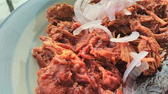

Cochinita Pibil Recipe

Description
Cochinita pibil (also puerco pibil or cochinita con achiote) is a
traditional Yucatec Mayan slow-roasted pork dish from the Yucatán
Peninsula. Preparation of traditional cochinita involves marinating the
meat in strongly acidic citrus juice, adding annatto seed, which imparts a
vivid burnt orange color, and roasting the meat in a píib while it is
wrapped in banana leaf.
Ingredients
- 2 pounds pork butt roast with bone
- 2 tablespoons achiote paste
- 1/3 cup orange juice
- 2/3 cup fresh-squeezed lemon juice
- 2 habanero peppers, seeded and chopped
- 1 teaspoon ground cumin
- 1 teaspoon paprika
- 1 teaspooon ground coriander
- salt and pepper to taste
- 1/2 cup red wine vinegar
- 2 red onions, sliced into rings
Steps to prepare
-
Poke holes all over the pork with a fork. Rub achiote paste all over the
pork, and set aside. In a large bowl, mix together the orange juice,
lemon juice, and habanero peppers. Mix in the cumin, paprika, chili
powder, coriander, salt and pepper. Place pork in the mixture, cover,
and refrigerate overnight, turning two or three times.
-
Preheat the oven to 325 degrees F (165 degrees C). Wrap the pork and
marinade in aluminum foil or banana leaves that have been soaked in
water for 30 minutes. Place into a casserole dish, and cover.
-
Bake for about 2 hours, until the meat falls off the bone. The slower
you cook it, the better it is. You could also bake it in a 200 degrees F
(95 degrees C) oven for 4 or 5 hours, or in a slow cooker without the
foil or leaves.
-
While the pork is cooking, make the sauce. Bring the red wine vinegar to
a boil in a small saucepan. Add onions, reduce heat to medium-low, and
simmer until tender. Pour sauce over pork, and serve with white rice and
corn tortillas. Each person can make tacos or fajitas with the pork, the
rice and the sauce.
Return to main page